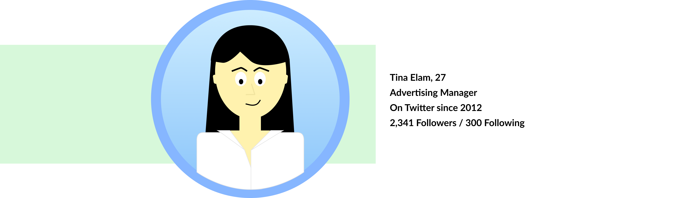

isabelanguera2@gmail.com
(434) 907-2508

The Project
Build an easy-to-use, accessible tool that enables everyday Twitter users to combat misinformation by evaluating their own tweets and Twitter network.
The Team
I was the UX Designer and Project Lead for TweetGuard. This was a collaborative project done during a one-day hackathon with students from from different New York based universities.
The Problem
Misinformation; false or inaccurate information with or without the intent to deceive, is a term that has been around since the 1500s and has been catalyzed by social media.
Twitter is a popular platform for the spread of misinformation and is one of the biggest offenders. This is due to the speed with which users can share content, Twitter’s weak policies on the subject, and the sheer enormity of its population of daily active users (DAU), which falls at around 145 million people.
Before approaching the making of TweetGuard we wanted to set specific goals and write out what the intended outcome of each one would be.
Our target user, someone like Tina Elam, might have a large presence online. Tina has just found out she shared a fake news story and wants to make sure she hasn't before. She wants to be a responsible Tweeter and know how to spot misinformation.
Features
Rather than give a grade for how accurate their accounts are, we wanted to give specific information. This allows users to see what they may have shared that they thought was real and give them an idea of what to look for in the future.

From TweetGuard itself you can unfollow, un-retweet, un-like, etc. any tweet or account that is flagged. You can even unfollow all flagged bots, though we do have a disclaimer that not all bots are bad bots. We give the user the tools and the choice to take action.

The Expansion
After the hackathon I wanted to expand on aspects of the project. I decided to think of an implementation within Twitter itself so that users didn’t have to navigate to the tool site in order to benefit from it. This comes in the form of a browser extension that when enacted shows a warning on tweets that may contain misinformation or accounts that are potential bots.

Takeaways
From mentor feedback one of the things that I realized would be a huge pain point in TweetGuard was the fact that our page had to be seeked out. While there are some people who might be interested in finding out the information we give, they might not come back more than that one time. Implementing TweetGuard in a more continuous way, such as in an extension or even working with Twitter itself would allow people to have a more beneficial back and forth with their Twitter network. This is true for both TweetGuard and tools like it, which is something to think about for future projects.
isabelanguera2@gmail.com
(434) 907-2508